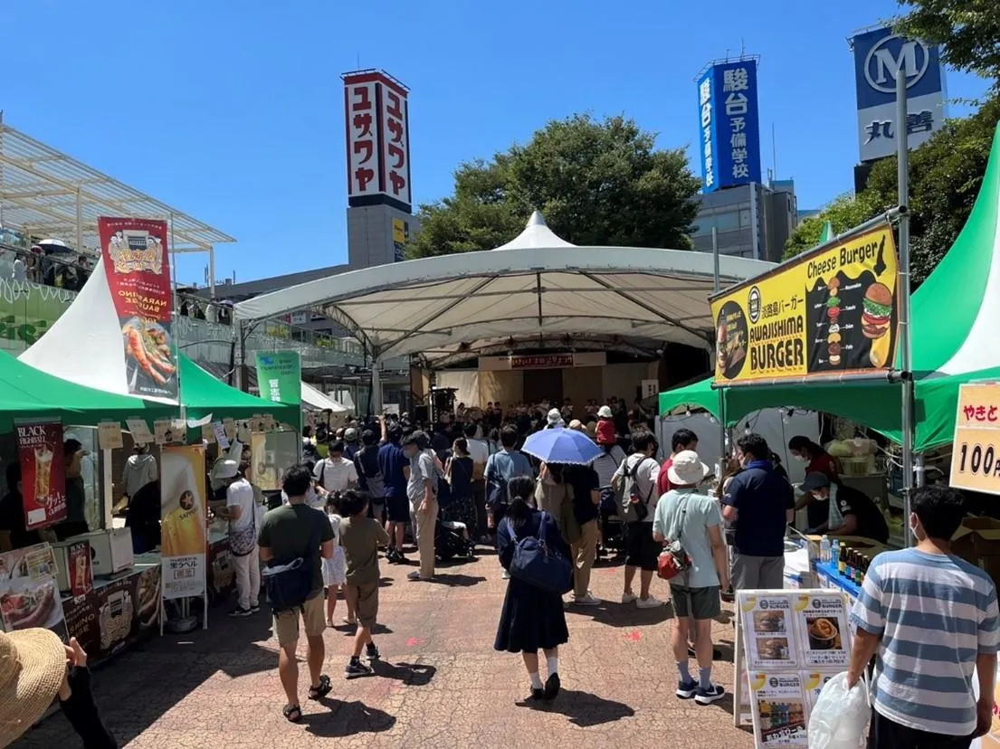
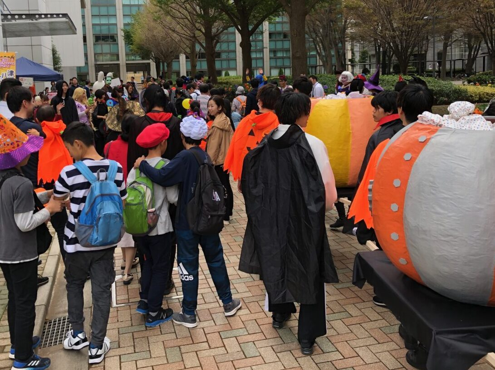
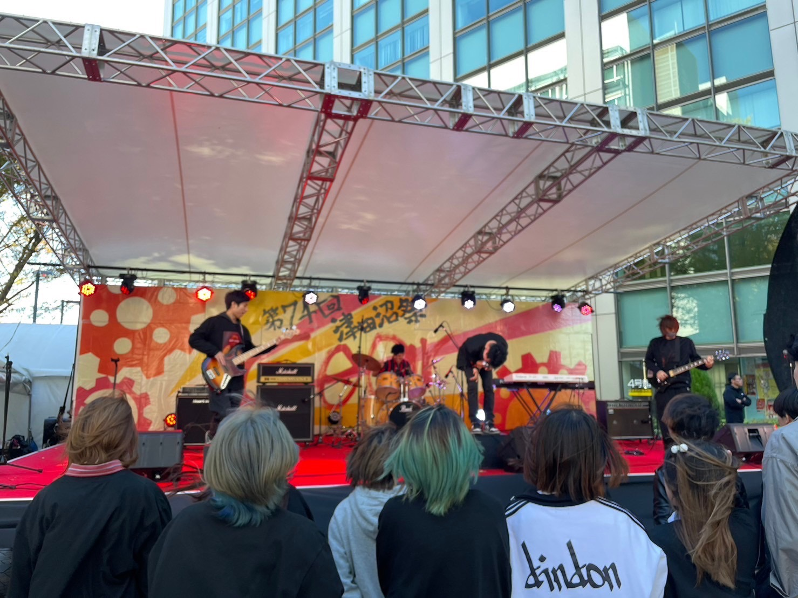
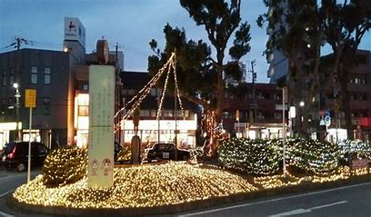

場 所：JR津田沼駅南口の津田沼公園（モリシア前）
開催時期：7月末の2日間
備 考：出店だけではなく、フリーマーケットやステージイベントなども行われている。

場 所：JR津田沼駅周辺
開催時期：10月最後の土曜、日曜の2日間
備 考：スタンプラリーでお菓子がもらえる！当日は子どもが多数参加される可能性があります。恋人の前で童心に返りたくない人やムードを大事にしたい人向きではないかも！

場 所：千葉工業大学 津田沼キャンパス
開催時期：11月後半の3日間
備 考：学生による出店やゲストを招いたステージなどが行われる。日によって開催されるイベントが違うので注意！

場 所：京成津田沼駅前「ワイがや広場」
開催時期：12月中旬から
備 考：点灯式の日には地元の音楽家の方や小学生によるクリスマスコンサートなどが行われる。ムード重視の方にお勧め！